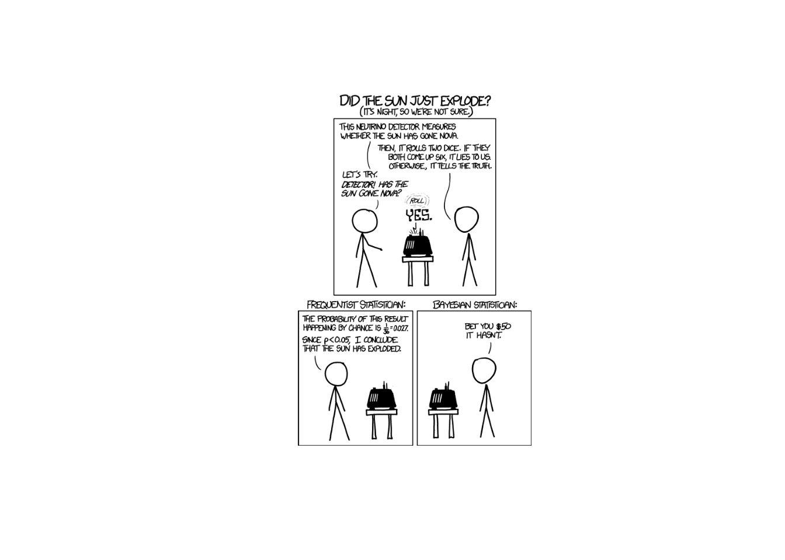
Lesson 21: Class Imbalance and Prevalence
Break!
Family


DMath Frisbee!!

Math vs DMI
NoteResult
9-0
15-3
Calendar
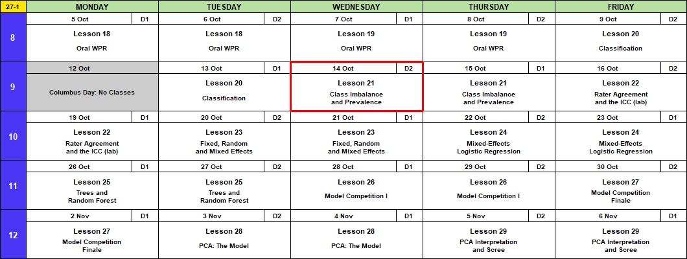
Admin
- I’ll be here for three weeks: Lessons 21 to 28, 14 October to 4 November.
- Canvas page
- Board Sheet
- R Script
- Data: L21_clinic.csv, L21_clinic_rare.csv
What We Did: Lesson 20
NoteReview: Judging a Classifier (Lesson 20)
| Truth positive | Truth negative | |
|---|---|---|
| Predicted positive | TP | FP, a false alarm |
| Predicted negative | FN, a miss | TN |
- Accuracy \(= \dfrac{TP + TN}{n}\)
- Sensitivity \(= \dfrac{TP}{TP + FN}\)
- Specificity \(= \dfrac{TN}{TN + FP}\)
- Precision \(= \dfrac{TP}{TP + FP}\)
- \(F_1 = \dfrac{2\,TP}{2\,TP + FP + FN}\)
- Heart study at threshold \(0.5\): 0 men warned, 91.3% accurate
- Threshold tuned on \(F_1\): \(0.125\), catches 39 of 82
Clinic Appointments (Lesson 9)
4,000 appointments, simulated from the Lesson 9 Air Force Academy clinic data. 2,053 were no-shows.
lead_days: days between booking the appointment and the visitno_show: 1 if the patient missed the appointment, 0 if it was keptset:train(2,800 appointments) ortest(1,200)
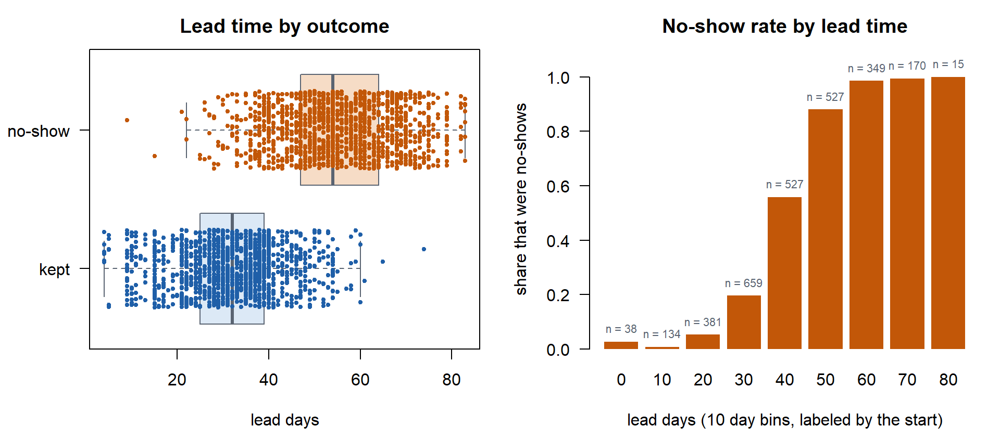
clinic <- read.csv("data/L21_clinic.csv")
train <- clinic[clinic$set == "train", ]
test <- clinic[clinic$set == "test", ]
fit <- glm(no_show ~ lead_days, family = binomial, data = train)
summary(fit)
Call:
glm(formula = no_show ~ lead_days, family = binomial, data = train)
Coefficients:
Estimate Std. Error z value Pr(>|z|)
(Intercept) -7.871644 0.294502 -26.73 <2e-16 ***
lead_days 0.184134 0.006815 27.02 <2e-16 ***
---
Signif. codes: 0 '***' 0.001 '**' 0.01 '*' 0.05 '.' 0.1 ' ' 1
(Dispersion parameter for binomial family taken to be 1)
Null deviance: 3879.7 on 2799 degrees of freedom
Residual deviance: 1913.8 on 2798 degrees of freedom
AIC: 1917.8
Number of Fisher Scoring iterations: 6\[\text{logit}\,P(\text{no-show}) = -7.87 + 0.184\,(\text{lead days})\]
Flag an appointment when \(\hat{p} \ge 0.5\). Scored on the 1,200 test appointments.
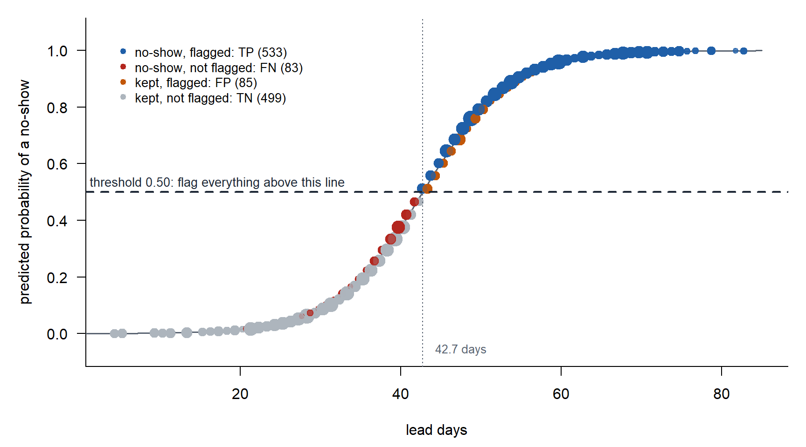
| Truth: no-show | Truth: kept | |
|---|---|---|
| Predicted no-show | TP \(=\) 533 | FP \(=\) 85 |
| Predicted kept | FN \(=\) 83 | TN \(=\) 499 |
| Metric | Of | Calculation |
|---|---|---|
| Accuracy | all appointments, the share called right | \(\dfrac{TP + TN}{n} = \dfrac{533 + 499}{1200} = 0.860\) |
| Sensitivity | the real no-shows, the share caught | \(\dfrac{TP}{TP + FN} = \dfrac{533}{533 + 83} = 0.865\) |
| Specificity | the kept appointments, the share left alone | \(\dfrac{TN}{TN + FP} = \dfrac{499}{499 + 85} = 0.854\) |
| Precision | the flagged appointments, the share that were real | \(\dfrac{TP}{TP + FP} = \dfrac{533}{533 + 85} = 0.862\) |
| \(F_1\)* | the harmonic mean of sensitivity and precision | \(\dfrac{2\,TP}{2\,TP + FP + FN} = \dfrac{2(533)}{2(533) + 85 + 83} = 0.864\) |
| Null classifier | call every appointment a no-show, the larger class | \(\dfrac{TP + FN}{n} = \dfrac{533 + 83}{1200} = 0.513\) |
* \(F_1\), in plain terms
- One score for two jobs: catch the real ones (sensitivity) and do not cry wolf (precision).
- \(F_1 = \dfrac{TP}{TP + \frac{1}{2}(FP + FN)}\): the hits, against the hits plus the average of the two kinds of mistake.
- Harmonic mean of \(a\) and \(b\): \(\dfrac{2ab}{a + b}\). It sits near the smaller one. Sensitivity \(1.00\) and precision \(0.10\) average to \(0.55\), but \(F_1 = 0.18\).
- Flag everyone: sensitivity is \(1\), precision is poor, \(F_1\) is low. Flag one sure case: precision is \(1\), sensitivity is poor, \(F_1\) is low.
- \(TN\) never appears, so a big pile of easy negatives cannot raise it. That is why it is used when the outcome is rare.
All at Once
library(yardstick)
p_hat <- predict(fit, test, type = "response")
results <- data.frame(
truth = factor(ifelse(test$no_show == 1, "no-show", "kept"), levels = c("no-show", "kept")),
pred = factor(ifelse(p_hat >= 0.5, "no-show", "kept"), levels = c("no-show", "kept")))
conf_mat(results, truth = truth, estimate = pred) Truth
Prediction no-show kept
no-show 533 85
kept 83 499five <- metric_set(accuracy, sensitivity, specificity, precision, f_meas)
five(results, truth = truth, estimate = pred)# A tibble: 5 × 3
.metric .estimator .estimate
<chr> <chr> <dbl>
1 accuracy binary 0.86
2 sensitivity binary 0.865
3 specificity binary 0.854
4 precision binary 0.862
5 f_meas binary 0.864What We’re Doing: Lesson 21
Objectives
- Frame. Say what a rare outcome does to each metric before any model is fit.
- Apply. Handle imbalance three ways (threshold, class weights, undersampling) and compare what each one flags.
- Mean. Each fix moves the cutoff and none improves the model. Precision moves with prevalence.
- Communicate. Report a classifier’s performance with the prevalence it was measured at.
Required Reading
Altman and Bland (1994), Diagnostic tests 2: predictive values, one page. Their positive predictive value is our precision.
What If the Data Looked Like This?
2,163 appointments. 216 were no-shows. That is only 10 percent. Previously we had 51 percent.
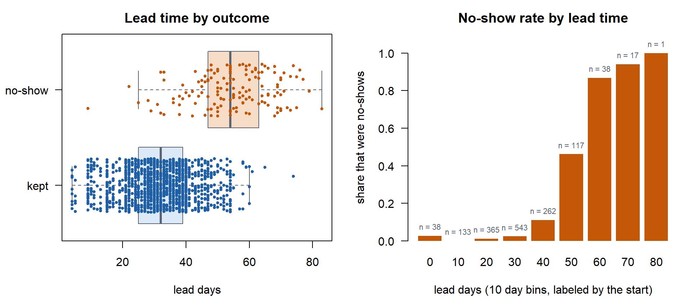
rare <- read.csv("data/L21_clinic_rare.csv")
train <- rare[rare$set == "train", ]
test <- rare[rare$set == "test", ]
fit <- glm(no_show ~ lead_days, family = binomial, data = train)\[\text{logit}\,P(\text{no-show}) = -9.88 + 0.180\,(\text{lead days})\]
Flag an appointment when \(\hat{p} \ge 0.5\). Scored on the 649 test appointments.
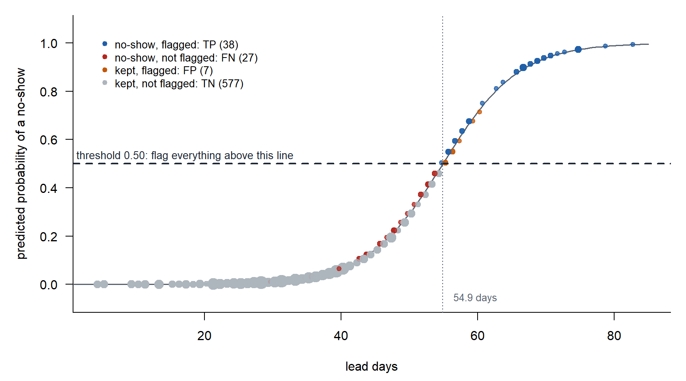
Recalculate
| Truth: no-show | Truth: kept | |
|---|---|---|
| Predicted no-show | TP \(=\) 38 | FP \(=\) 7 |
| Predicted kept | FN \(=\) 27 | TN \(=\) 577 |
| Metric | Calculation | Before |
|---|---|---|
| Accuracy | \(\dfrac{TP + TN}{n} = \dfrac{38 + 577}{649} = 0.948\) | 0.860 |
| Sensitivity | \(\dfrac{TP}{TP + FN} = \dfrac{38}{38 + 27} = 0.585\) | 0.865 |
| Specificity | \(\dfrac{TN}{TN + FP} = \dfrac{577}{577 + 7} = 0.988\) | 0.854 |
| Precision | \(\dfrac{TP}{TP + FP} = \dfrac{38}{38 + 7} = 0.844\) | 0.862 |
| \(F_1\) | \(\dfrac{2\,TP}{2\,TP + FP + FN} = \dfrac{2(38)}{2(38) + 7 + 27} = 0.691\) | 0.864 |
| Null classifier (call every appointment kept) | \(\dfrac{TN + FP}{n} = \dfrac{577 + 7}{649} = 0.900\) | 0.513 |
What Is Out of Whack
- Sensitivity: 0.865 to 0.585. The model misses 27 of the 65 no-shows.
- \(F_1\): 0.864 to 0.691
- Accuracy: up, 0.860 to 0.948. The null classifier scores 0.900.
- The cutoff: flag at 42.7 days to flag at 54.9 days
What Rare Does to Each Metric
| Metric | Share of | As prevalence falls |
|---|---|---|
| Accuracy | everyone | The null classifier scores \(1 - \text{prevalence}\) |
| Sensitivity | the Truth positive column | falls at a fixed threshold of \(0.5\) |
| Precision | the Predicted positive row | falls at a fixed sensitivity |
| \(F_1\) | falls |
Three Fixes
Fit on the training set. Scored on the 649 test appointments, 65 no-shows.
Fix 1: Move the Threshold
Tune the threshold on \(F_1\) by five-fold cross-validation on the training set, as in Lesson 20.
plain <- glm(no_show ~ lead_days, family = binomial, data = train)
ts <- seq(0.05, 0.50, by = 0.025) # the thresholds to try
set.seed(11)
fold <- sample(rep(1:5, length.out = nrow(train))) # each training appointment gets a fold
p_cv <- numeric(nrow(train))
for (k in 1:5) {
f <- glm(no_show ~ lead_days, family = binomial, data = train[fold != k, ]) # fit on four folds
p_cv[fold == k] <- predict(f, train[fold == k, ], type = "response") # predict the fifth
}
f1 <- sapply(ts, function(t) {
flag <- p_cv >= t
2 * sum(flag & train$no_show == 1) / (sum(flag) + sum(train$no_show == 1))
})
best <- ts[which.max(f1)]
flag <- predict(plain, test, type = "response") >= best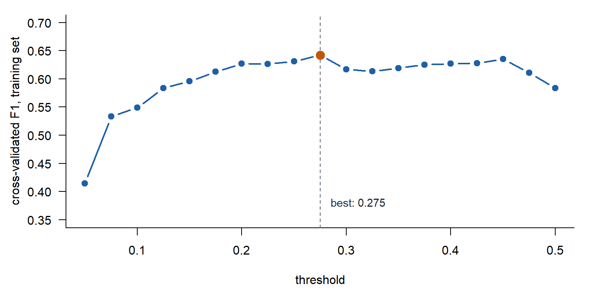
Flag when \(\hat{p} \ge 0.275\). Scored on the 649 test appointments.
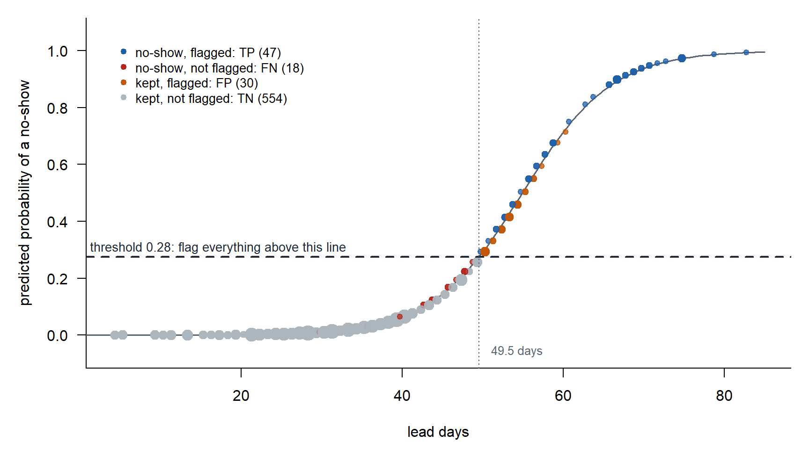
| Truth: no-show | Truth: kept | |
|---|---|---|
| Predicted no-show | TP \(=\) 47 | FP \(=\) 30 |
| Predicted kept | FN \(=\) 18 | TN \(=\) 554 |
| Metric | Calculation | Plain at 0.5 |
|---|---|---|
| Accuracy | \(\dfrac{TP + TN}{n} = \dfrac{47 + 554}{649} = 0.926\) | 0.948 |
| Sensitivity | \(\dfrac{TP}{TP + FN} = \dfrac{47}{47 + 18} = 0.723\) | 0.585 |
| Specificity | \(\dfrac{TN}{TN + FP} = \dfrac{554}{554 + 30} = 0.949\) | 0.988 |
| Precision | \(\dfrac{TP}{TP + FP} = \dfrac{47}{47 + 30} = 0.610\) | 0.844 |
| \(F_1\) | \(\dfrac{2\,TP}{2\,TP + FP + FN} = \dfrac{2(47)}{2(47) + 30 + 18} = 0.662\) | 0.691 |
- Same model, same curve. Only the threshold moved.
- The cutoff went from 54.9 days to 49.5 days.
- 77 test appointments flagged, up from 45.
- On the training folds \(F_1\) was 0.642 at 0.275 and 0.584 at \(0.5\). On the test set it is 0.662 and 0.691: with 65 no-shows, a few appointments move it.
Fix 2: Class Weights
Each training no-show counts as \(\dfrac{n_0}{n_1} = \dfrac{1363}{151} = 9.03\) appointments.
w <- ifelse(train$no_show == 1, sum(train$no_show == 0) / sum(train$no_show == 1), 1)
weighted <- glm(no_show ~ lead_days, family = binomial, data = train, weights = w)Flag when \(\hat{p} \ge 0.5\). Scored on the 649 test appointments.
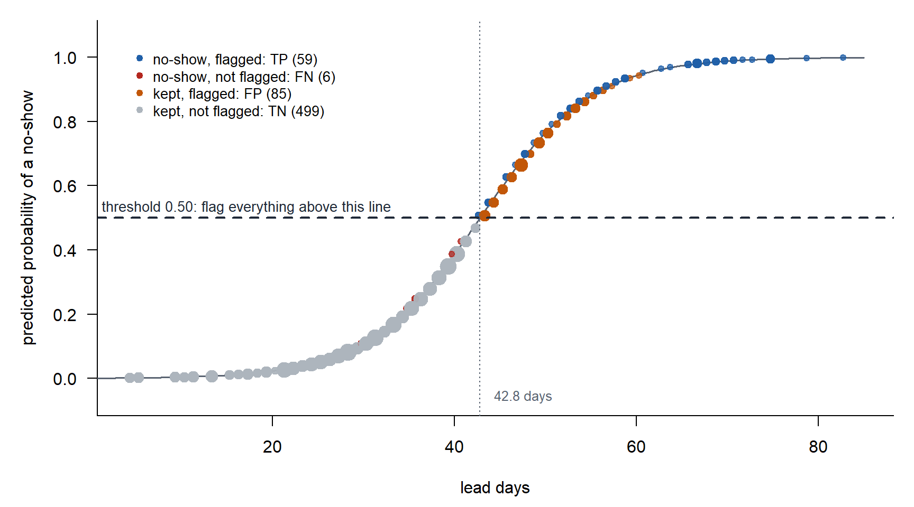
| Truth: no-show | Truth: kept | |
|---|---|---|
| Predicted no-show | TP \(=\) 59 | FP \(=\) 85 |
| Predicted kept | FN \(=\) 6 | TN \(=\) 499 |
| Metric | Calculation | Plain at 0.5 |
|---|---|---|
| Accuracy | \(\dfrac{TP + TN}{n} = \dfrac{59 + 499}{649} = 0.860\) | 0.948 |
| Sensitivity | \(\dfrac{TP}{TP + FN} = \dfrac{59}{59 + 6} = 0.908\) | 0.585 |
| Specificity | \(\dfrac{TN}{TN + FP} = \dfrac{499}{499 + 85} = 0.854\) | 0.988 |
| Precision | \(\dfrac{TP}{TP + FP} = \dfrac{59}{59 + 85} = 0.410\) | 0.844 |
| \(F_1\) | \(\dfrac{2\,TP}{2\,TP + FP + FN} = \dfrac{2(59)}{2(59) + 85 + 6} = 0.565\) | 0.691 |
- A new model, so the curve moved. The threshold is back at \(0.5\).
- The cutoff is 42.8 days. Fix 1 put it at 49.5 days.
- 144 test appointments flagged. A threshold of 0.10, the prevalence, on the plain model flags the same 144.
Fix 3: Undersample
In the training set, keep all 151 no-shows and a random 151 of the 1,363 kept appointments.
set.seed(376)
keep <- c(which(train$no_show == 1), sample(which(train$no_show == 0), sum(train$no_show == 1)))
under <- glm(no_show ~ lead_days, family = binomial, data = train[keep, ])Flag when \(\hat{p} \ge 0.5\). Scored on the 649 test appointments.
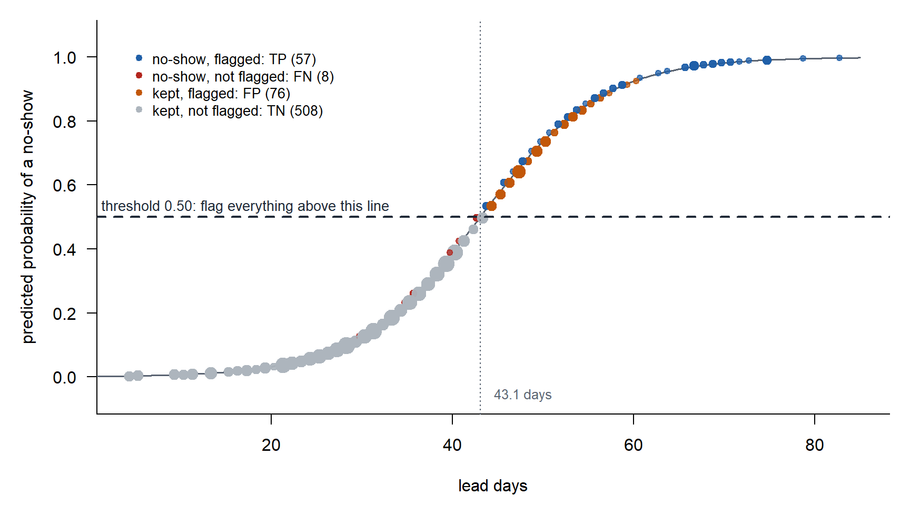
| Truth: no-show | Truth: kept | |
|---|---|---|
| Predicted no-show | TP \(=\) 57 | FP \(=\) 76 |
| Predicted kept | FN \(=\) 8 | TN \(=\) 508 |
| Metric | Calculation | Plain at 0.5 |
|---|---|---|
| Accuracy | \(\dfrac{TP + TN}{n} = \dfrac{57 + 508}{649} = 0.871\) | 0.948 |
| Sensitivity | \(\dfrac{TP}{TP + FN} = \dfrac{57}{57 + 8} = 0.877\) | 0.585 |
| Specificity | \(\dfrac{TN}{TN + FP} = \dfrac{508}{508 + 76} = 0.870\) | 0.988 |
| Precision | \(\dfrac{TP}{TP + FP} = \dfrac{57}{57 + 76} = 0.429\) | 0.844 |
| \(F_1\) | \(\dfrac{2\,TP}{2\,TP + FP + FN} = \dfrac{2(57)}{2(57) + 76 + 8} = 0.576\) | 0.691 |
- A new model fit on 302 training appointments. The threshold is \(0.5\).
- The cutoff is 43.1 days.
- 133 test appointments flagged, close to Fix 2. The draw is random, so another seed moves these numbers a little.
Side by Side
All four rows are scored on the same 649 test appointments.
| Model | Threshold | Flag at (days) | Flagged | Caught | Sensitivity | Precision | \(F_1\) |
|---|---|---|---|---|---|---|---|
| Plain | \(0.5\) | 54.9 | 45 | 38 | 0.585 | 0.844 | 0.691 |
| Plain, tuned | \(0.275\) | 49.5 | 77 | 47 | 0.723 | 0.610 | 0.662 |
| Class weights | \(0.5\) | 42.8 | 144 | 59 | 0.908 | 0.410 | 0.565 |
| Undersampled | \(0.5\) | 43.1 | 133 | 57 | 0.877 | 0.429 | 0.576 |
ImportantTakeaway
- A rare outcome breaks the \(0.5\) threshold, not the model.
- The threshold is yours to set. Tuned on \(F_1\): 47 of 65 no-shows caught, 30 false alarms.
- Class weights and undersampling set it for you, near the prevalence: 59 caught, 85 false alarms.
- None of the three improves the model. Each one moves the cutoff.
- Choose the cutoff from what a miss and a false alarm cost.
- Report sensitivity and precision together, with the null classifier and the prevalence.
- All of this works for any model that gives a probability. So far: logistic regression (Lessons 9 and 20) and the random forest you saw in Lesson 20. Coming: mixed-effects logistic regression (Lesson 24), trees and random forest (Lesson 25).
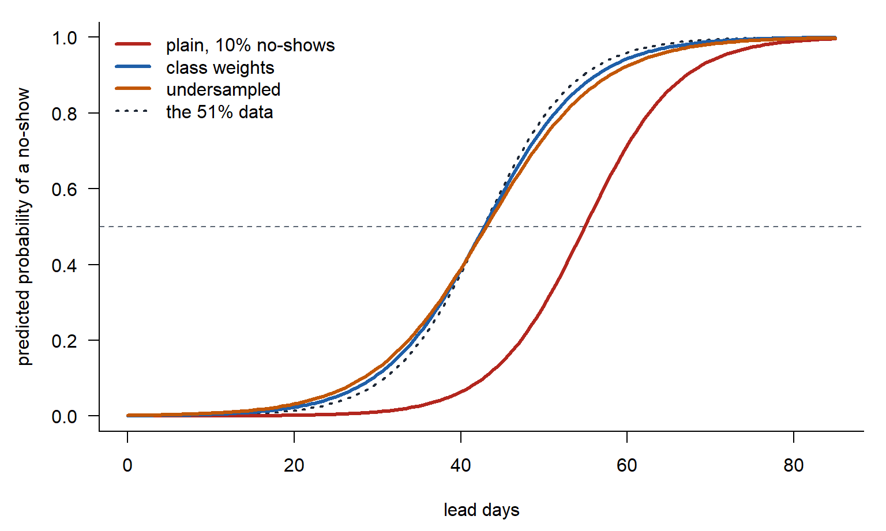
Precision Moves with Prevalence
- Prevalence: of all the appointments, the share that really are no-shows. How common the thing you are hunting is.
- Precision: of the appointments you flagged, the share that really are no-shows. How often a flag is right.
ImportantPrecision at a Given Prevalence
\[\text{precision} = \frac{\text{no-shows caught}}{\text{no-shows caught} + \text{kept, flagged by mistake}} = \frac{\text{sensitivity}\cdot\text{prevalence}}{\text{sensitivity}\cdot\text{prevalence} + (1 - \text{specificity})(1 - \text{prevalence})}\]
Precision at Each Prevalence
| Plain at 0.5 | Fix 1: tuned threshold | Fix 2: class weights | Fix 3: undersample | |
|---|---|---|---|---|
| Sensitivity, at every prevalence | 0.585 | 0.723 | 0.908 | 0.877 |
| Specificity, at every prevalence | 0.988 | 0.949 | 0.854 | 0.870 |
| Precision at 51.3% prevalence | 0.981 | 0.937 | 0.868 | 0.877 |
| Precision at 25.0% prevalence | 0.942 | 0.824 | 0.675 | 0.692 |
| Precision at 10.0% prevalence | 0.844 | 0.609 | 0.409 | 0.427 |
| Precision at 5.0% prevalence | 0.720 | 0.426 | 0.247 | 0.262 |
| Precision at 2.6% prevalence | 0.566 | 0.273 | 0.143 | 0.152 |
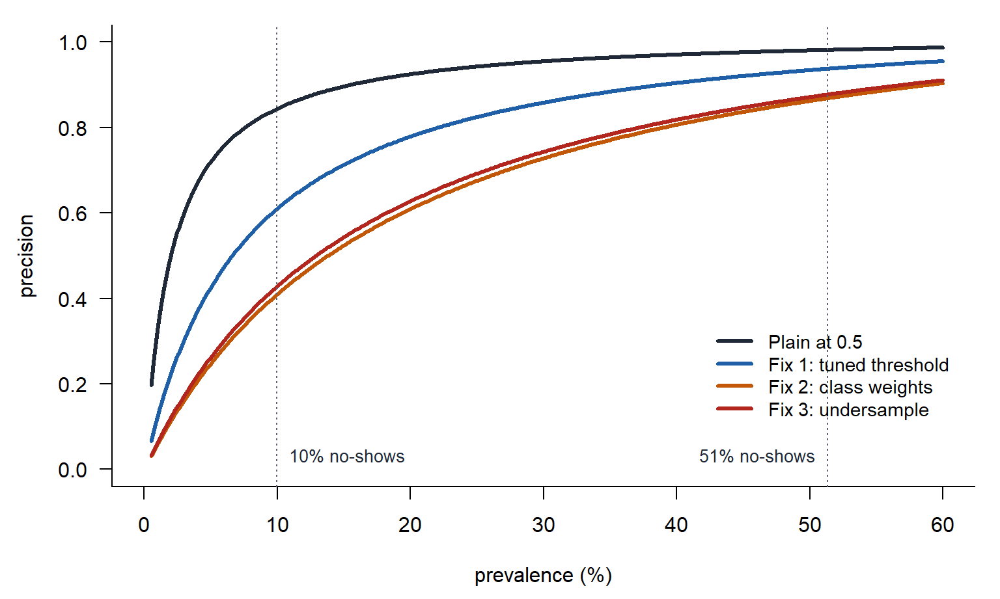
Reporting It
At a threshold of \(0.275\), on appointments of which 10% were no-shows, the model caught 72% of the no-shows and 61% of its flags were real. At a prevalence of 2.6%, 27% of its flags would be real.
Before You Leave
Today
- A rare outcome: accuracy and the \(0.5\) threshold both fail
- Threshold, class weights, undersampling: each moves the cutoff, none improves the model
- Sensitivity and specificity do not move with prevalence. Precision does.
- Report performance with the prevalence it was measured at
Any questions?
Next Lesson
Lesson 22: Rater Agreement and the ICC (lab)
- Frame. A rater is a classifier with no truth column, so agreement replaces accuracy.
- Apply. Percent agreement, kappa, PABAK, and the ICC from a two-way ANOVA with raters as blocks.
- Mean. Chance agreement rises as prevalence moves to an extreme, so kappa collapses while agreement stays high. The ICC is the share of variance that is rep to rep.
- Communicate. Tell the first sergeant whether the graders agree and which grader is the problem.
Reading: Koo and Li (2016)
Upcoming Graded Events
- Capstone milestone 1 (exploratory): due 2359 Friday 16 October
- Block 3 quiz (Lessons 20 to 23): Lesson 27
- Memo 4: due in class, hard copy, Lesson 27